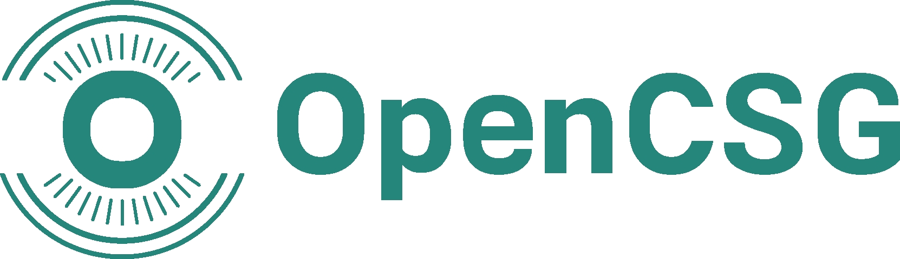
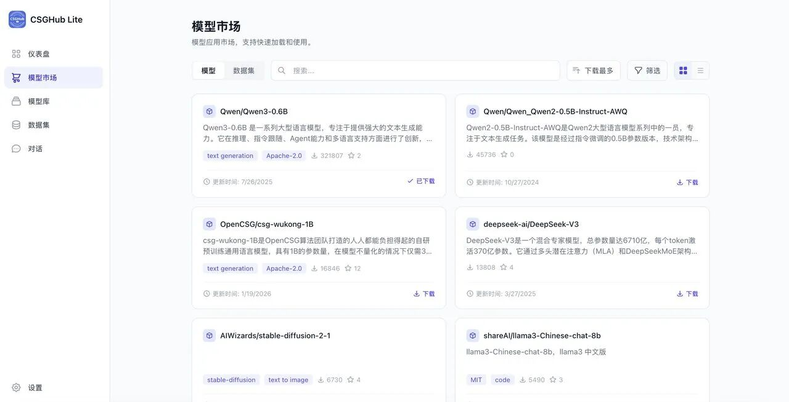

GitLab
以代码为中心的软件生命周期

OpenCSG
商业计划书2026 · 投资人材料
OPENCSG · 开放式 AI 基础设施
OpenCSG
让大模型赋能每一个人
AI 主权核心开源 · 混合方案 · Agentic驱动 · 主权AI


OpenCSG 创立于 2023 年，已覆盖 30+ 国家与地区，面向全球组织提供开源 AgenticOps 与 AI 主权基础设施，让客户在模型、数据、算力与智能体四个层面拥有自主、可控、可演进的 AI 能力。


所有主体都先以 CSGLite 积累高质量数据，再用 CSGClaw 尝试智能体并迭代小模型；升级为组织型 OPC 后托管企业 AI 资产，最终通过 AgenticHub 协作共创并实现产业商业化。
个人 AI 工作空间：本地运行基础模型，管理知识与工具，在真实任务中积累高质量数据。

多 Agent 协同平台：编排任务、自动化 Workflow，并用真实反馈持续迭代 Agent 与小模型。

企业 AI 资产全生命周期平台：将验证后的能力托管到服务端，沉淀为可治理、可复用的组织型 OPC 资产。

企业 Agent 平台：覆盖设计、开发、协作、评测与运营，让组织型 OPC 融入产业生态并形成商业变现。

这不是一次性漏斗，而是递进飞轮：生态反馈持续回流到 CSGLite 数据、CSGClaw 智能体与组织资产，推动下一轮增长。